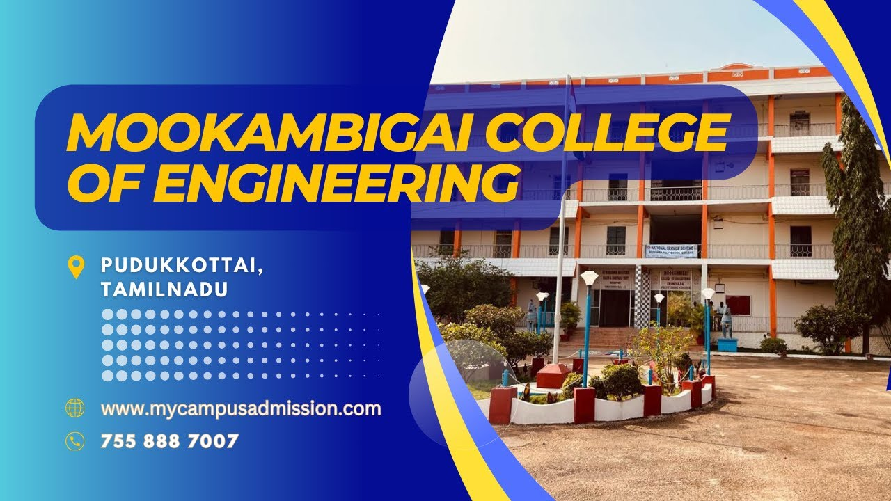

Scientists dream about doing great things. Engineers do them check
The engineer has been, and is, a maker of history. check
Engineering is the closest thing to magic that exists in the world check
Engineers have more imagination than bankers check
